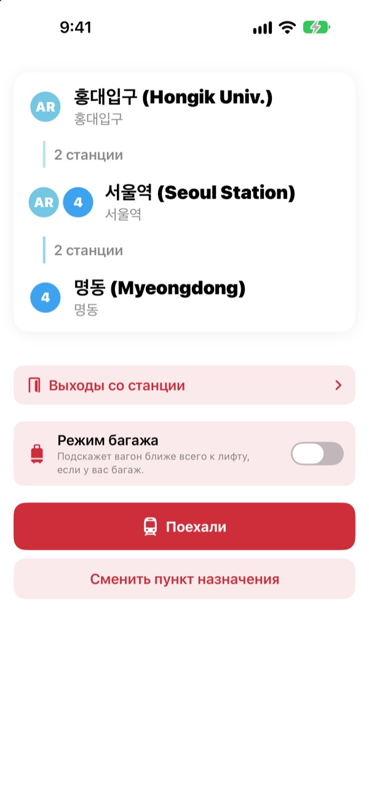
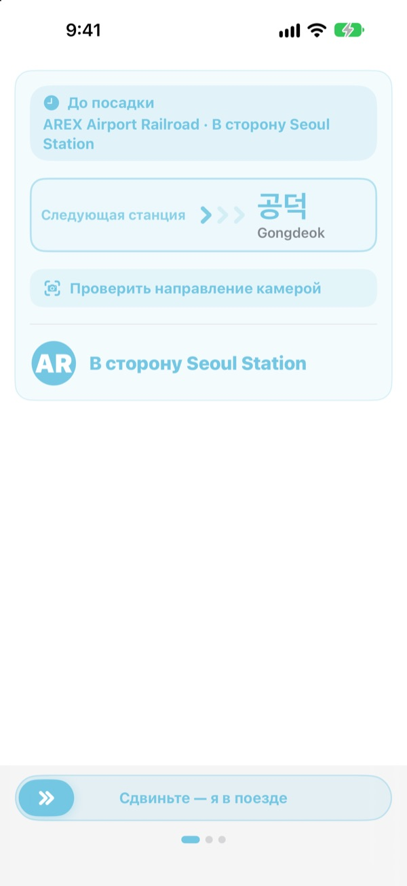
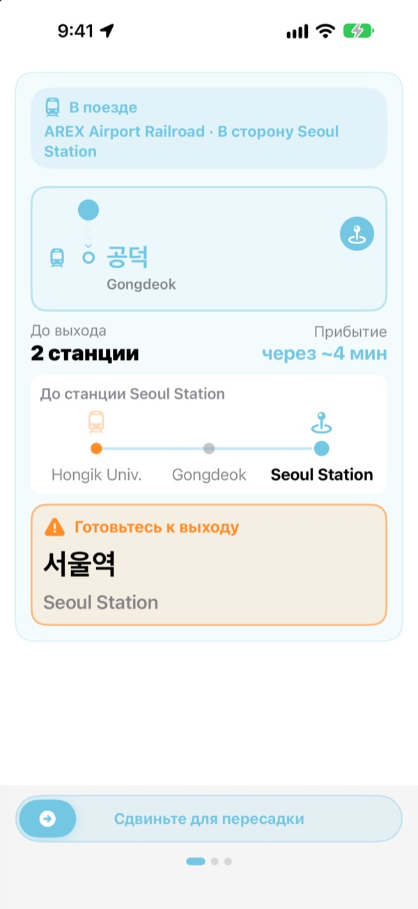
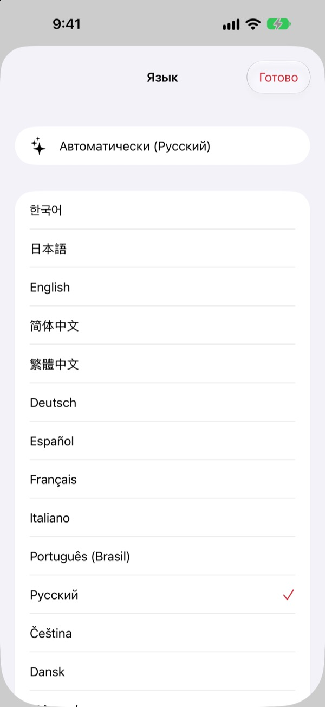

Нужная платформа.
Нужная станция.
Выберите начальную и конечную станции, и KORA скажет, в какой поезд садиться, слово в слово как на указателе на платформе. В пути приложение следит за станциями и подсказывает, когда выходить.
Поиск маршрута, направление поезда и прибытие в реальном времени бесплатны.

Прокатитесь
Вы на станции Hongik Univ. линии AREX. Выберите, где выйти, и нажмите «Поехали»: направление поезда и подсказки о выходе появятся так же, как в приложении.
Стояли на платформе, не понимая, в какой поезд садиться?
Приложения с картами показывают линию, а на платформе только указатели с незнакомыми названиями конечных станций. Сели не в ту сторону, и приходится возвращаться на несколько станций. Пропустили объявление, и проехали свою. KORA называет ваш поезд так же, как указатель, и заранее предупреждает о вашей станции.
Теми же словами, что на указателе
Нужный поезд показан ровно так, как его конечная написана на платформе и на самом поезде. Сомневаетесь? Наведите камеру на указатель на платформе или табло поезда, и KORA сразу скажет, в ту ли сторону вы едете.
Текст распознаётся полностью на вашем iPhone.

Свою станцию не проедете
KORA объединяет данные о прибытии в реальном времени, GPS, отправления и остановки поезда и объявления в вагоне, чтобы знать, где вы. Перед вашей станцией придёт «Готовьтесь к выходу», а затем «Выходите сейчас!» с вибрацией.
Ход поездки виден и на экране блокировки, и в Dynamic Island.

23 языка, корейские названия на месте
Всё приложение доступно на 23 языках и открывается на языке вашего iPhone. Рядом с корейским названием станции стоит латинское написание с указателей, так что на платформе всё легко сверить.

Три шага, и можно ехать
- 1
Задайте начало
GPS найдёт ближайшую станцию, или выберите её сами.
- 2
Выберите, куда едете
Пересадки, станции и нужный поезд появятся сразу.
- 3
Нажмите «Поехали»
Экран и вибрация подскажут, когда выходить.
Зачем нужны разрешения
- Геопозиция
- Найти ближайшую станцию
- Камера
- Прочитать указатели и табло поезда, чтобы проверить направление
- Микрофон и распознавание речи
- Расслышать в объявлениях название станции и сторону выхода
- Движение и фитнес
- Замечать отправление и остановки, чтобы точнее знать текущую станцию
Все разрешения необязательны. Без них вы выбираете станции сами и всё равно получаете маршрут и подсказки о выходе. Геопозиция, камера и объявления обрабатываются на устройстве и никогда не записываются, не хранятся и не отправляются.
Маршруты всегда бесплатны, а сопровождение в пути есть в KORA Pro.
Бесплатно
- Поиск маршрута и пересадки
- Надпись конечной на нужном поезде
- Прибытие в реальном времени
- Проверка направления камерой
- Текущая станция и подсказка о выходе на экране
- Все функции Pro в первых трёх поездках
KORA Pro
- В каждой поездке: подсказки на экране блокировки, распознавание объявлений и вибрация при выходе
- Выходы со станции: что рядом с каждым выходом на линиях 1–8 в Сеуле
- Напоминание о последнем поезде на линиях 1–9
- Режим багажа: вагон ближе всего к лифту на линиях 1–8
Покупаете один раз и навсегда. Это не подписка.
Когда бесплатные поездки закончатся, ездить можно по-прежнему. Ход поездки на экране остаётся, на паузу встают только экран блокировки, распознавание объявлений и вибрация.
Частые вопросы
Приложение не находит мою станцию или показывает другую.
Откройте Настройки > Конфиденциальность и безопасность > Службы геолокации > KORA, выберите «При использовании приложения» и включите «Точная геопозиция». Под землёй и в больших зданиях GPS может ошибаться: нажмите карточку текущей станции вверху и выберите её сами. Всё работает и без доступа к геопозиции.
Как пользоваться проверкой камерой?
Когда маршрут на экране, откройте проверку камерой и наведите её на указатель на платформе или табло поезда так, чтобы он занял весь кадр. Лучше всего распознаётся корейский текст. Если указатель тёмный, далеко или под сильным углом, подойдите ближе и снимайте прямо. Результат лишь подсказка: если сомневаетесь, сверьтесь с указателями на станции.
Не показывается прибытие в реальном времени.
Данные приходят от Seoul Open Data Plaza, нужен интернет, и есть они в основном для линий Сеульского столичного региона. Без сети или данных KORA автоматически переходит на оценку по расписанию, GPS и акселерометру и продолжает вести вас. Поиск маршрута работает без интернета.
Подсказка о выходе пришла чуть раньше или позже.
Под землёй сигнал GPS слабый, и текущая станция может отставать. Если разрешить микрофон, KORA уточняет положение по объявлениям в вагоне. Подсказки лишь помогают: слушайте объявления и смотрите на указатели.
Как сменить язык?
KORA открывается на языке вашего iPhone. Нажмите и удерживайте карточку станции на главном экране (текущую или конечную), откроется выбор из 23 языков.
На экране блокировки нет Live Activity.
Проверьте, что Live Activity включены в Настройки > Приложения > KORA (в старых версиях iOS Настройки > KORA). Она появляется, когда вы начинаете сопровождение поездки, и завершается, если полностью закрыть приложение. Dynamic Island есть только на моделях iPhone, где она предусмотрена.
Какие города поддерживаются?
Около 930 станций в Сеульском столичном регионе (Сеул, Кёнгидо и Инчхон, включая GTX-A, AREX, линию Синбундан и лёгкое метро), а также в Пусане, Тэгу, Кванджу и Тэджоне. Город меняется метками регионов вверху экрана выбора станции.
Можно попробовать до поездки?
Да. Выберите начальную и конечную станции сами, и маршруты, пересадки и направление поезда можно посмотреть из любой точки мира.
KORA Pro продаётся по подписке?
Нет. Это разовая покупка, которая остаётся с вами и работает с Семейным доступом. После переустановки нажмите «Восстановить покупку» на экране Pro.
Что происходит с моими данными?
Ни аккаунта, ни рекламы. Геопозиция, камера и распознавание объявлений обрабатываются на устройстве и никогда не сохраняются и не отправляются. Мы собираем только анонимную статистику использования, чтобы улучшать приложение.
Приложение доступно для людей с ограничениями?
KORA поддерживает VoiceOver и крупный шрифт. Предложения, как сделать приложение доступнее, всегда приветствуются.
Нет станции, странное название или другой вопрос? Пишите на mizzking75@gmail.com. Укажите версию приложения, модель iPhone и станции, так мы разберёмся быстрее.